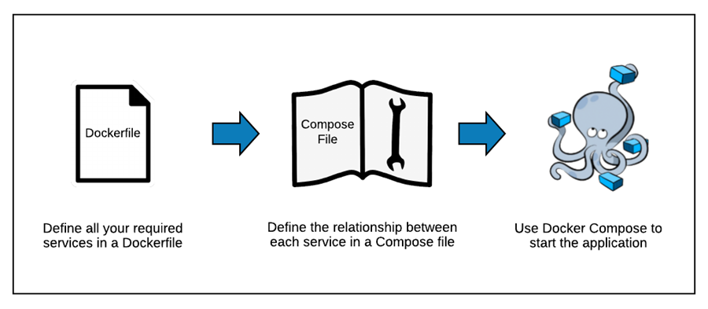

Docker
Introduction
- Docker is an open-source tool designed to make our life typically easier (although it takes energy and time to master) when creating, building, deploying, and running software applications.
- Docker can package an application and its dependencies in a virtual container that can run on any Linux, Windows, or macOS computer.
- Our Docker containers have everything required (e.g. OS packages, Python packages) inside to run certain applications/code.
Concepts
Docker image
- A Docker image is a read-only template with instructions for creating a Docker container
- Typically a Docker image includes needed libraries and packages and their versions
Dockerfile
- A
Dockerfileis a text document that contains all the commands to call on the command line to assemble an image. E.g.//cmamp/devops/docker_build/dev.Dockerfile.
Docker container
- A Docker container is a runnable instance of an image. One can run code inside a Docker container having all requirements installed.
Docker registry
- A Docker registry stores Docker images. In other words, Docker registry for docker images is like GitHub for code.
Poetry
- Poetry is a tool for managing Python packages and dependencies and allows to:
- List packages you want to install with some constraints
- E.g.,
pandasmust be above 1.0 indevops/docker_build/pyproject.toml
- E.g.,
- Given a list of packages you need to install to get the desired environment,
poetry"optimizes" the package versions and generatedevops/docker_build/poetry.lock, which contains the list of versions of the packages to install - If there is a new version of a package re-running
poetrymight give you an updated list of packages to install
Build a Docker image
General
- A docker image is built from a
Dockerfile. The image is then used to run a Docker container.

- There is
/devopsdir under a project's dir that contains Docker-related files, e.g.cmamp/devops
Base image
- A
Dockerfileshould start with specifying a base image. - The base image is an image that a new image is built on top of. A new Docker image will have all the packages/dependencies that are installed in the base image.
- Use
FROMstatement to specify a base image, e.g.FROM ubuntu:20.4
Copy files
- Copy files that are required to build a Docker image to the Docker filesystem
- To copy a file from
/source_dir(your filesystem) to/dst_dir(Docker filesystem) do:COPY source_dir/file dst_dir - E.g., the command below will copy
install_packages.shfromdevops/docker_buildto the Docker's root directory so thatinstall_packages.shcan be accessed by DockerCOPY devops/docker_build/install_packages.sh .
Install OS packages
- Install OS packages that are needed for a Docker app, but that are not installed for a base image
- Use
RUNinstruction to install a package, e.g.RUN apt-get install postgresql-client - Alternatively you can package all installation instructions in a
.shfile and run it. Do not forget to copy a.shfile to the Docker filesystem so that Docker can see it. E.g.,COPY devops/docker_build/install_packages.sh . RUN /bin/sh -c "./install_packages.sh"
Install Python packages
- We prefer to install Python packages with
poetry - Make sure that there is instruction to install
pip3andpoetry. You can either put it in aDockerfileor in a separate file likeinstall_packages.sh.RUN apt-get install python3-pip RUN pip3 install poetry - Copy poetry-related files to the Docker filesystem so that files can be
accessed by Docker
COPY devops/docker_build/poetry.toml COPY devops/docker_build/poetry.lock - Install Python packages
RUN poetry install
Build an image from a Dockerfile
- To build an image from a
Dockerfilerun: ```docker build . ```
- The
Dockerfilemust be calledDockerfileand located in the root of the build context - You can point to any
Dockerfileby using-f: ```docker build -f /path/to/dockerfile ```
Run multi-container Docker application
- Docker Compose is a tool for defining and running multi-container Docker applications
- With Docker Compose you use a
YAMLfile to configure your application's services

Version
- At the beginning of a
docker-compose.yamlfile specify thedocker-composeversion. For more information see the official documentsversion: "3.0"
Images
- You can either re-use a public image or build a new one from a
Dockerfile - The
appservice below uses the image that is built from thedev.Dockerfileapp: build: context: . dockerfile: dev.Dockerfile - The
im_postgres_localservice below uses the publicpostgresimage pulled from the Docker hub registryim_postgres_local: image: postgres: 13
Bind mount
- If you want to be able to share files between the host and a Docker container, you should bind-mount a directory
- E.g. mount current directory to
/appdir inside a Docker container: ``` app: volumes:- .:/app ```
Environment variables
- You can either use variables directly from the environment or pass them in a
docker-compose.yamlfile - It is supposed that
POSTGRES_VERSIONis already defined in the shell.db: image: "postgres:${POSTGRES_VERSION}" - Set environment variable in a service's container
```
db:
environment:
- POSTGRES_VERSION=13 image: "postgres:${POSTGRES_VERSION}" ```
- Set environment variable with
.envfile ``` db: env_file:- ./postgres_env.env image: "postgres:${POSTGRES_VERSION}" ```
- File
postgres_env.env```bashcat ./postgres_env.env POSTGRES_VERSION=13 ```
Basic commands
-
To check more advanced usage, please see the official documentation.
-
Let's assume that the
docker-compose.yamlfile is located in the current dir
```bash # Build, (re)create, start, and attach to containers for a service.
docker-compose up
# List containers
docker-compose ps
# Stop containers created with up
docker-compose down ```